Published: 2022-10-31
Source link: https://www.cnphotos.net/academy/show-102.html
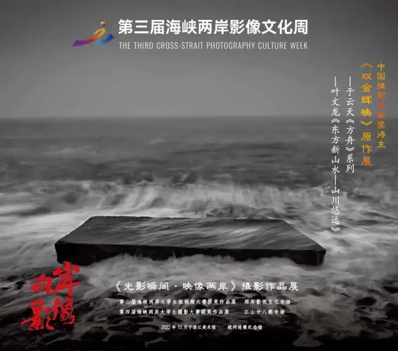
The main Hangzhou eventruns October 20 to November 1at the Zhejiang Art Museum
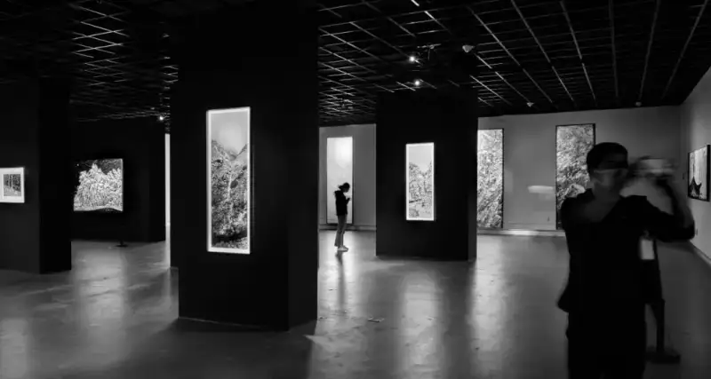
Exhibition site at the Zhejiang Art Museum
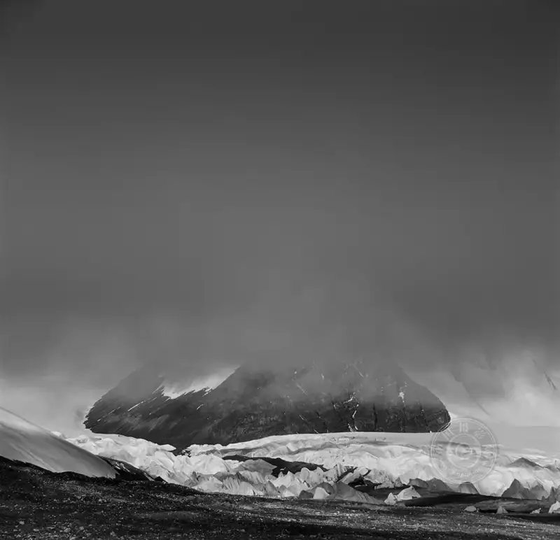
Selected works from the Ark series Yu Yuntian
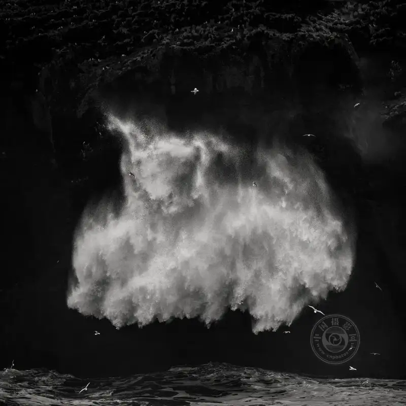
Selected works from the Ark series Yu Yuntian
Yu Yuntian's photographic life has many high points. Two of them stand out brightly.
The first was the award for the Nine Songs series. With it, Yu won the first China Photography Gold Award. In Yu's view, the series drew on the fanciful, mysterious, and grand spirit of Qu Yuan's Chu Ci poems. It carried out the practice of bringing Zen into the image as an inner landscape. The study, understanding, digestion, and living use of the Chu Ci poems guided the making of Nine Songs. This shows why Yu stood out at the first China Photography Gold Award, and it opened a new realm of deep photography for him.
The second was The Ark1series. Both Eastern and Western cultures have an ark. In Chinese culture, there is both a real ark and an imagined ark. The Book of Songs,/Valley Wind, records the phrase making it a square and making it a boat, glossed as showing a raft rather than a ship. The ark of that time was really a square timber floating on water, used to cross and to save lives, and it was mostly real. In old poems there are also flying boat, lone boat, and light boat, each carrying the mood of a different life scene. In the West, the Bible,/Genesis, holds the myth of Noah's Ark. It carries the images of judgment, redemption, and eternal life, and it is wrapped in mystery within its theology.2011In that year, a discarded square concrete slab by the sea in Wenling, Zhejiang, became Yu's subject. This was the Ark1series work that won best work in the Eternity and Precision Art exhibition held by Hasselblad and the watchmaker Audemars Piguet. Here, Yu moved from the Eastern image of the ark to the Western idea, opened a link between Eastern and Western cultures, and brought them together.
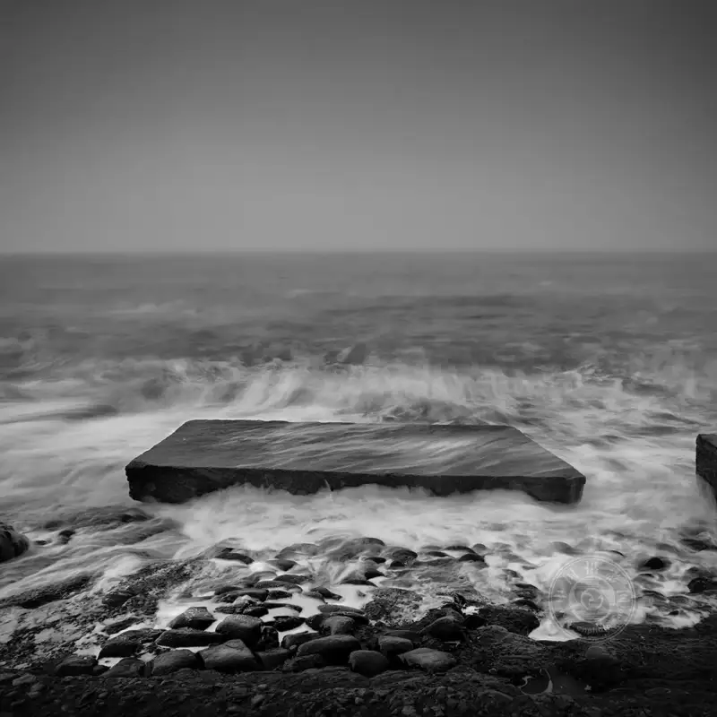
Selected works from the Ark series Yu Yuntian
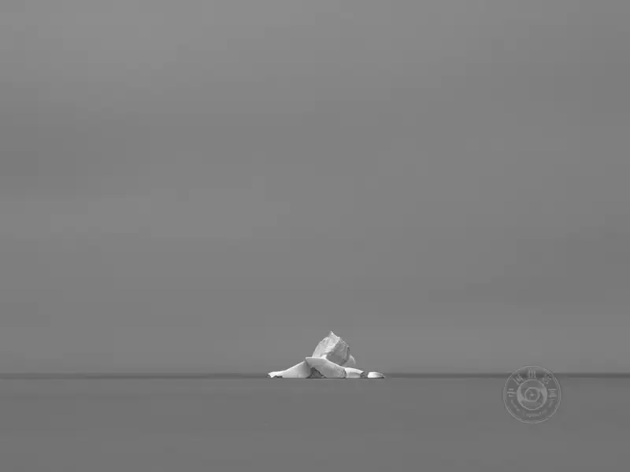
Selected works from the Ark series Yu Yuntian
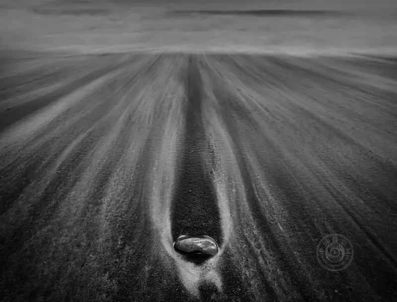
Selected works from the Ark series Yu Yuntian
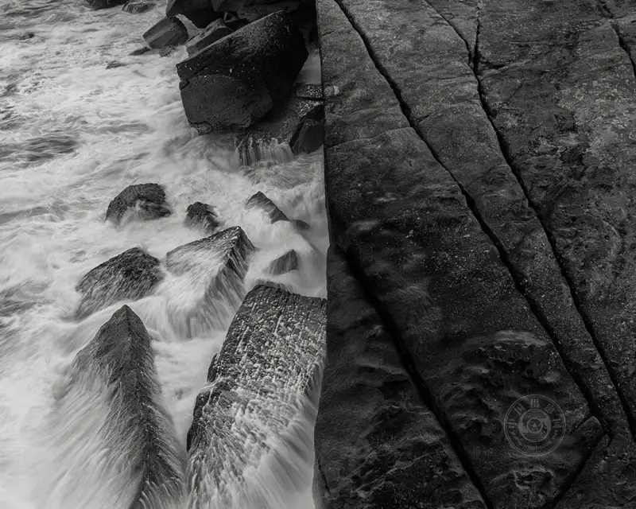
Selected works from the Ark series Yu Yuntian
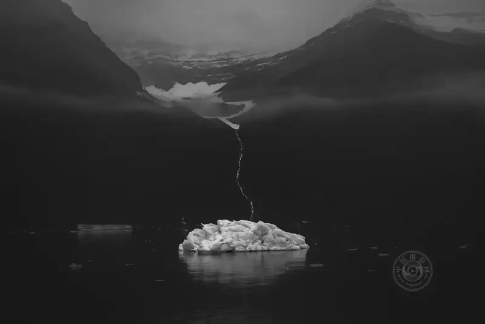
Selected works from the Ark series Yu Yuntian
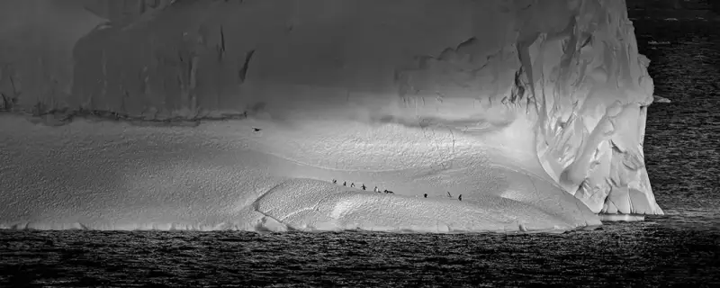
Selected works from the Ark series Yu Yuntian
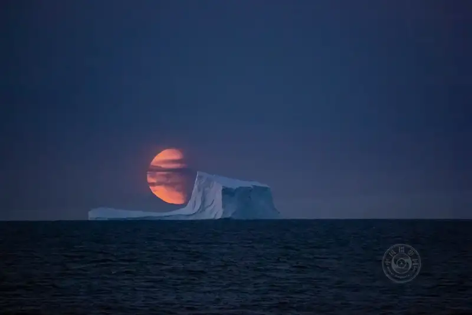
Divine Comedy Yu Yuntian
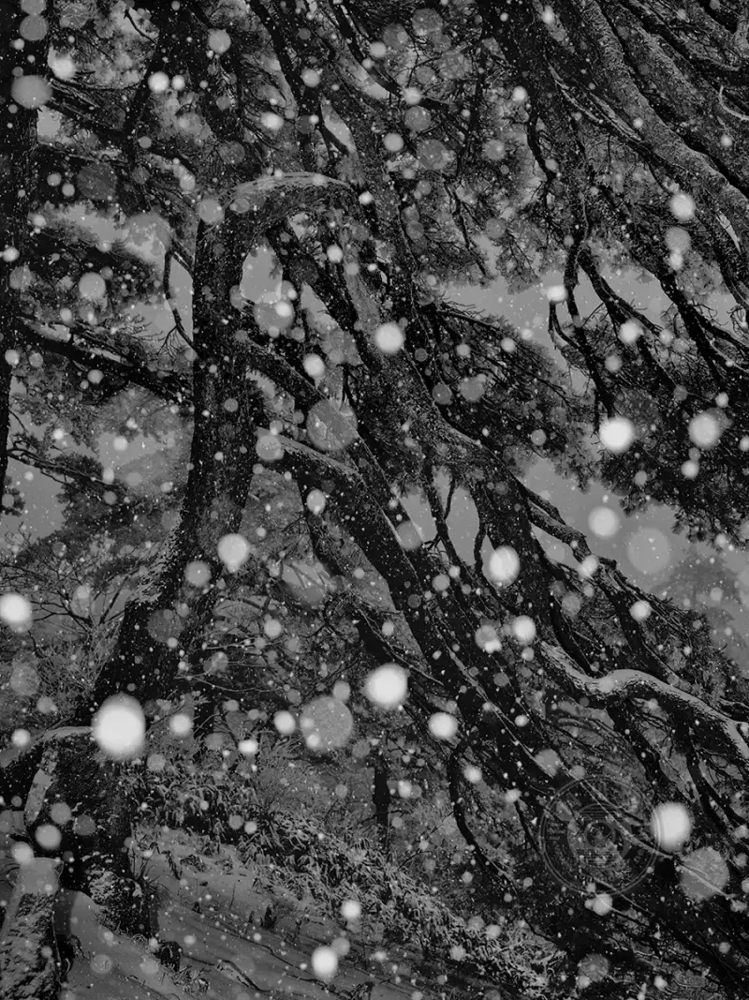
Selected works from the Winter Snow series Ye Wenlong
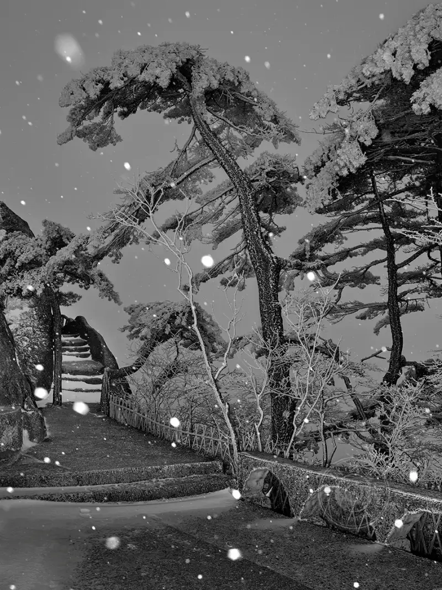
Winter Snow selected works Ye Wenlong
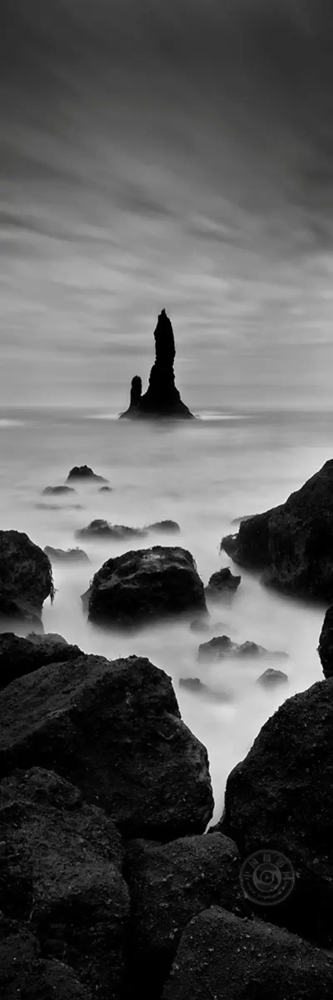
Selected works from the Landscape Poetry Journey series Ye Wenlong
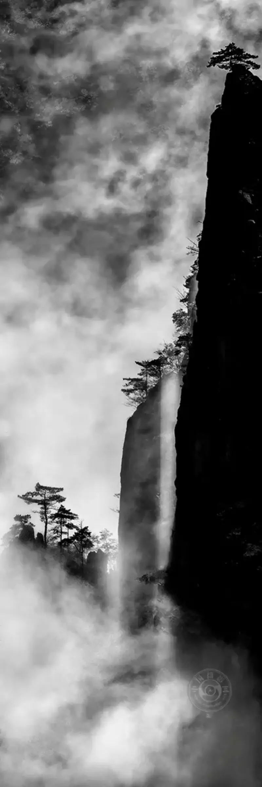
"LandscapePoetry Journey selected works Ye Wenlong
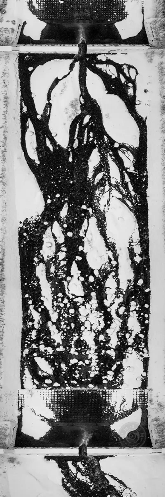
"LandscapePoetry Journey selected works Ye Wenlong
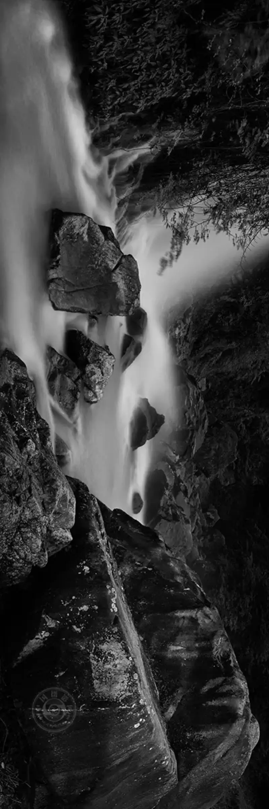
"LandscapePoetry Journey selected works Ye Wenlong
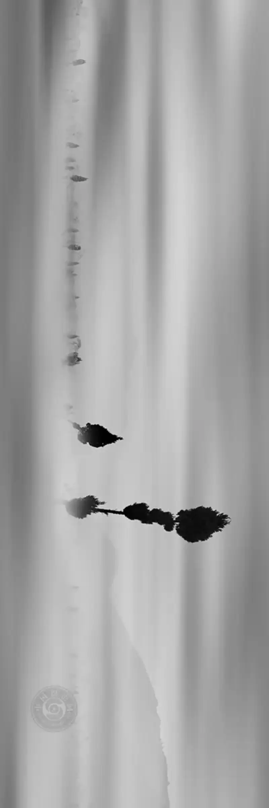
"LandscapePoetry Journey selected works Ye Wenlong
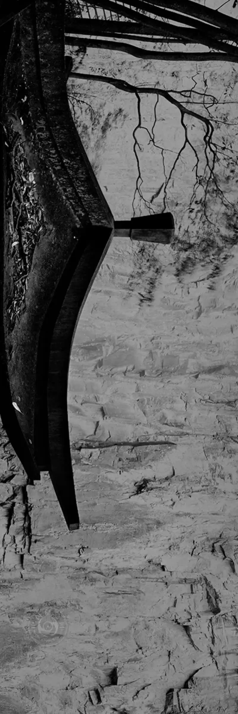
"LandscapePoetry Journey selected works Ye Wenlong
The third Cross-Strait Image Culture Week meets at the time of the 20th National Congress of the Communist Party of China. The rise of the Eastern dragon draws the eyes of all. Today, the growth of the motherland cannot be stopped, and the great renewal of the Chinese nation has entered an irreversible course. To carry on, spread, and share Chinese culture is the shared duty of the descendants on both sides. Photography has lingered in the Western context for too long. The search for renewal and breakthrough has become a surging force that, like the tide, will grow ever broader. Chinese culture is our spring of wisdom and the source of our spirit, and an endless storehouse for art. Let us join the work of building a Chinese context for photography, and push the photography of the new era together.
Carry the past forward, and keep on living.
Director of the Organizing Committee, Cross-Strait Image Culture Week Zhuang Yuecheng
(2022Written by West Lake in the golden autumn.